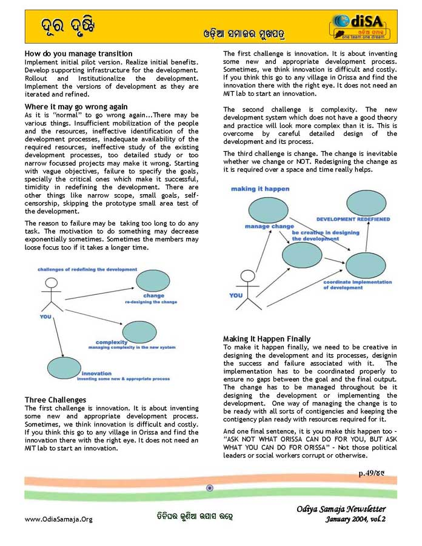

January 2004 · saved image 49
Original saved website JPEG. Numbering follows its filename; identity to the preserved PDF revision is not assumed.

Previous · All original pages · Next
Source: June2013Backup/OdiyaOrgNew/duradrusti/jan2004/img/49.jpg. Original image bytes retained. New static navigation; no server program runs.